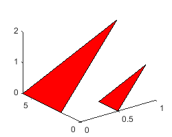
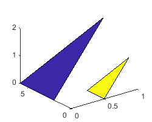
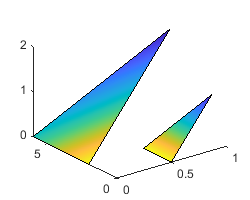

fill3
Create filled 3-D patches
Syntax
Description
fill3(
plots filled polygonal regions on 3-D axes as X,Y,Z,C)Patch objects with vertices
at the (x,y,z) locations specified
by X, Y, and Z.
To plot one region, specify
X,Y, andZas vectors.To plot multiple regions, specify
X,Y, andZas matrices where each column corresponds to a polygon.
C determines the fill colors for the regions.
fill3(___, modifies the
Name,Value)Patch objects using one or more name-value arguments to set properties.
Patches can be specified using any of the input argument combinations in previous syntaxes.
For example, fill3(X,Y,Z,C,'LineWidth',2) specifies a two-point border
around all the patches. For a list of properties, see Patch Properties.
fill3( plots the polygonal
regions in the axes specified by ax,___)ax instead of in the current axes
(gca).
p = fill3(___)Patch object or a vector of Patch objects. Use
p to query and modify properties after plotting a region. For a full
list of properties, see Patch Properties.
Examples
Specify vectors x, y, and z as the (x,y,z) coordinates of the vertices for a triangle. Then plot the triangle with the specified fill color, red.
x = [0 0 0];
y = [0 2 1];
z = [0 0 2];
fill3(x,y,z,'r')
Define vectors x1, y1, z1 and x2, y2, z2 as the (x,y,z) coordinates of the vertices for two rectangles. Specify the color of each rectangle as an RGB triplet, with values dictating the intensities of the red, green, and blue components of the color. Plot both rectangles in a single fill3 call.
x1 = [0 0 1 1]; y1 = [3 3 2 2]; z1 = [0 3 2 1]; c1 = [0 0.447 0.741]; x2 = [2 2 3 3]; y2 = [1 1 0 0]; z2 = [1 2 3 0]; c2 = [0.850 0.325 0.098]; fill3(x1,y1,z1,c1,x2,y2,z2,c2)

Specify matrices x, y, and z as the coordinates of the vertices for three adjacent squares. Specify c as a matrix of the same dimensions as x, y, and z. Each value in c specifies a colormap index for the corresponding vertex. The fill3 function interpolates the fill color of each square from the vertex colors.
x = [0 0 0; 0 0 2; 0 2 2; 0 2 0]; y = [2 0 2; 0 0 2; 0 0 0; 2 0 0]; z = [2 0 2; 2 2 2; 0 2 2; 0 0 2]; c = [2 2 2; 3 3 0; 2 2 2; 0 0 3]; fill3(x,y,z,c)

Plot two triangles with fill colors specified by vector c of colormap indices. Store the two returned patches in vector p.
x = [0 1; 1.5 2.5; 3 4]; y = [4 4; 2.5 2.5; 1 1]; z = [0 0; 2 2; 0 0]; c = [1 0]; p = fill3(x,y,z,c);

Use p to modify the first triangle. Modify the FaceAlpha property of the first element of p to make the first triangle transparent.
p(1).FaceAlpha = 0.5;

Input Arguments
x-coordinates of the patch vertices, specified as a vector or matrix.
| Number of Patches | Description | Example |
|---|---|---|
One patch | Specify | Plot one triangular patch. X = [0 0 4]; Y = [2 4 2]; Z = [1 1 1]; C = 1; fill3(X,Y,Z,C) |
Two or more patches | Specify the shared coordinates as a vector. Specify the other coordinates as matrices. The length of the vector must match the length of one dimension of the matrix. If the matrix is square, MATLAB® plots the columns of the matrices against the vector. | Plot two triangular patches with shared x- and z-coordinates. X = [0 0 4]; Y = [0 -0; 2 -2; 0 0]; Z = [0 0 0]; C = [0 1]; fill3(X,Y,Z,C) |
Two or more patches | Specify | Plot two triangular patches with unique x-, y- and z-coordinates. X = [0 5; 0 5; 4 9]; Y = [2 0; 4 2; 2 0]; Z = [0 1; 2 3; 1 2]; C = [0 1]; fill3(X,Y,Z,C) |
If the data does not define closed regions, then fill3 closes the
regions.
Data Types: single | double | int8 | int16 | int32 | int64 | uint8 | uint16 | uint32 | uint64 | categorical | datetime | duration
y-coordinates of the patch vertices, specified as a vector or matrix.
| Number of Patches | Description | Example |
|---|---|---|
One patch | Specify | Plot one triangular patch. X = [0 0 4]; Y = [2 4 2]; Z = [1 1 1]; C = 1; fill3(X,Y,Z,C) |
Two or more patches | Specify the shared coordinates as a vector. Specify the other coordinates as matrices. The length of the vector must match the length of one dimension of the matrix. If the matrix is square, MATLAB plots the columns of the matrices against the vector. | Plot two triangular patches with shared x- and z-coordinates. X = [0 0 4]; Y = [0 -0; 2 -2; 0 0]; Z = [0 0 0]; C = [0 1]; fill3(X,Y,Z,C) |
Two or more patches | Specify | Plot two triangular patches with unique x-, y- and z-coordinates. X = [0 5; 0 5; 4 9]; Y = [2 0; 4 2; 2 0]; Z = [0 1; 2 3; 1 2]; C = [0 1]; fill3(X,Y,Z,C) |
If the data does not define closed regions, then fill3 closes the
regions.
Data Types: single | double | int8 | int16 | int32 | int64 | uint8 | uint16 | uint32 | uint64 | categorical | datetime | duration
z-coordinates of the patch vertices, specified as a vector or matrix.
| Number of Patches | Description | Example |
|---|---|---|
One patch | Specify | Plot one triangular patch. X = [0 0 4]; Y = [2 4 2]; Z = [1 1 1]; C = 1; fill3(X,Y,Z,C) |
Two or more patches | Specify the shared coordinates as a vector. Specify the other coordinates as matrices. The length of the vector must match the length of one dimension of the matrix. If the matrix is square, MATLAB plots the columns of the matrices against the vector. | Plot two triangular patches with shared x- and z-coordinates. X = [0 0 4]; Y = [0 -0; 2 -2; 0 0]; Z = [0 0 0]; C = [0 1]; fill3(X,Y,Z,C) |
Two or more patches | Specify | Plot two triangular patches with unique x-, y- and z-coordinates. X = [0 5; 0 5; 4 9]; Y = [2 0; 4 2; 2 0]; Z = [0 1; 2 3; 1 2]; C = [0 1]; fill3(X,Y,Z,C) |
If the data does not define closed regions, then fill3 closes the
regions.
Data Types: single | double | int8 | int16 | int32 | int64 | uint8 | uint16 | uint32 | uint64 | categorical | datetime | duration
Patch colors, specified as a color name, RGB triplet, vector of colormap indices, or a matrix of colormap indices.
Color name — A color name such as
'red', or a short name such as'r'.RGB triplet — A three-element row vector whose elements specify the intensities of the red, green, and blue components of the color. The intensities must be in the range
[0,1]; for example,[0.4 0.6 0.7]. RGB triplets are useful for creating custom colors.Vector of colormap indices — A vector of numeric values that has one element for each region.
Matrix of colormap indices — A matrix of numeric values that has the same dimensions as
X,Y, andZ.
The way you specify the color depends on the color scheme and whether you are plotting one polygonal region or multiple regions. This table describes the most common situations.
| Color Scheme | How to Specify the Color | Example |
|---|---|---|
| Single color for all regions | Specify a color name or a short name from the table below, or specify one RGB triplet. | Create matrices x = [0.5 0; 0.5 0; 1 1];
y = [0 2; 2 6; 1 4];
z = [0 0; 0 0; 1 2];
fill3(x,y,z,'r') |
| One color per region | Specify an n-by-1 or 1-by-n
vector of colormap indices, where | Create matrices x = [0.5 0; 0.5 0; 1 1]; y = [0 2; 2 6; 1 4]; z = [0 0; 0 0; 1 2]; c = [1 0]; fill3(x,y,z,c)  |
| Interpolated face colors | Specify an m-by-n matrix of
colormap indices, where | Create matrices x = [0.5 0; 0.5 0; 1 1]; y = [0 2; 2 6; 1 4]; z = [0 0; 0 0; 1 2]; c = [1 1; 1 0.5; 0 0]; fill3(x,y,z,c)  |
Color Names and RGB Triplets for Common Colors
| Color Name | Short Name | RGB Triplet | Hexadecimal Color Code | Appearance |
|---|---|---|---|---|
"red" | "r" | [1 0 0] | "#FF0000" |
|
"green" | "g" | [0 1 0] | "#00FF00" |
|
"blue" | "b" | [0 0 1] | "#0000FF" |
|
"cyan"
| "c" | [0 1 1] | "#00FFFF" |
|
"magenta" | "m" | [1 0 1] | "#FF00FF" |
|
"yellow" | "y" | [1 1 0] | "#FFFF00" |
|
"black" | "k" | [0 0 0] | "#000000" |
|
"white" | "w" | [1 1 1] | "#FFFFFF" |
|
This table lists the default color palettes for plots in the light and dark themes.
| Palette | Palette Colors |
|---|---|
Before R2025a: Most plots use these colors by default. |
|
|
|
You can get the RGB triplets and hexadecimal color codes for these palettes using the orderedcolors and rgb2hex functions. For example, get the RGB triplets for the "gem" palette and convert them to hexadecimal color codes.
RGB = orderedcolors("gem");
H = rgb2hex(RGB);Before R2023b: Get the RGB triplets using RGB =
get(groot,"FactoryAxesColorOrder").
Before R2024a: Get the hexadecimal color codes using H =
compose("#%02X%02X%02X",round(RGB*255)).
Axes to plot into, specified as an Axes or PolarAxes
object. If you do not specify the axes, then fill3 plots into
the current axes or creates an Axes object (Cartesian axes).
Name-Value Arguments
Specify optional pairs of arguments as
Name1=Value1,...,NameN=ValueN, where Name is
the argument name and Value is the corresponding value.
Name-value arguments must appear after other arguments, but the order of the
pairs does not matter.
Before R2021a, use commas to separate each name and value, and enclose
Name in quotes.
Example: fill3(x,y,z,c,'FaceAlpha',.5,'LineStyle',':') creates
semitransparent polygons with dotted edges.
Note
The properties listed here are only a subset of patch properties. For a complete list, see Patch Properties.
Face color, specified as 'interp', 'flat' an RGB
triplet, a hexadecimal color code, a color name, or a short name.
To create a different color for each face, specify the CData or
FaceVertexCData property as an array containing one color per
face or one color per vertex. The colors can be interpolated from the colors of the
surrounding vertices of each face, or they can be uniform. For interpolated colors,
specify this property as 'interp'. For uniform colors, specify this
property as 'flat'. If you specify 'flat' and a
different color for each vertex, the color of the first vertex you specify determines
the face color.
To designate a single color for all of the faces, specify this property as an RGB triplet, a hexadecimal color code, a color name, or a short name.
An RGB triplet is a three-element row vector whose elements specify the intensities of the red, green, and blue components of the color. The intensities must be in the range
[0,1]; for example,[0.4 0.6 0.7].A hexadecimal color code is a character vector or a string scalar that starts with a hash symbol (
#) followed by three or six hexadecimal digits, which can range from0toF. The values are not case sensitive. Thus, the color codes'#FF8800','#ff8800','#F80', and'#f80'are equivalent.
| Color Name | Short Name | RGB Triplet | Hexadecimal Color Code | Appearance |
|---|---|---|---|---|
"red" | "r" | [1 0 0] | "#FF0000" |
|
"green" | "g" | [0 1 0] | "#00FF00" |
|
"blue" | "b" | [0 0 1] | "#0000FF" |
|
"cyan"
| "c" | [0 1 1] | "#00FFFF" |
|
"magenta" | "m" | [1 0 1] | "#FF00FF" |
|
"yellow" | "y" | [1 1 0] | "#FFFF00" |
|
"black" | "k" | [0 0 0] | "#000000" |
|
"white" | "w" | [1 1 1] | "#FFFFFF" |
|
"none" | Not applicable | Not applicable | Not applicable | No color |
This table lists the default color palettes for plots in the light and dark themes.
| Palette | Palette Colors |
|---|---|
Before R2025a: Most plots use these colors by default. |
|
|
|
You can get the RGB triplets and hexadecimal color codes for these palettes using the orderedcolors and rgb2hex functions. For example, get the RGB triplets for the "gem" palette and convert them to hexadecimal color codes.
RGB = orderedcolors("gem");
H = rgb2hex(RGB);Before R2023b: Get the RGB triplets using RGB =
get(groot,"FactoryAxesColorOrder").
Before R2024a: Get the hexadecimal color codes using H =
compose("#%02X%02X%02X",round(RGB*255)).
Edge colors, specified as one of the values in this table. The default edge color is black
with a value of [0 0 0]. If multiple polygons share an edge, then the
first polygon drawn controls the displayed edge color.
| Value | Description | Result |
|---|---|---|
RGB triplet, hexadecimal color code, or color name | Single color for all of the edges. See the following table for more details. |
|
'flat' | Different color for each edge. Use the vertex colors to set
the color of the edge that follows it. You must first specify
|
|
'interp' | Interpolated edge color. You must first specify
|
|
'none' | No edges displayed. | No edges displayed. |


RGB triplets and hexadecimal color codes are useful for specifying custom colors.
An RGB triplet is a three-element row vector whose elements specify the intensities of the red, green, and blue components of the color. The intensities must be in the range
[0,1]; for example,[0.4 0.6 0.7].A hexadecimal color code is a character vector or a string scalar that starts with a hash symbol (
#) followed by three or six hexadecimal digits, which can range from0toF. The values are not case sensitive. Thus, the color codes"#FF8800","#ff8800","#F80", and"#f80"are equivalent.
Alternatively, you can specify some common colors by name. This table lists the named color options, the equivalent RGB triplets, and hexadecimal color codes.
| Color Name | Short Name | RGB Triplet | Hexadecimal Color Code | Appearance |
|---|---|---|---|---|
"red" | "r" | [1 0 0] | "#FF0000" |
|
"green" | "g" | [0 1 0] | "#00FF00" |
|
"blue" | "b" | [0 0 1] | "#0000FF" |
|
"cyan"
| "c" | [0 1 1] | "#00FFFF" |
|
"magenta" | "m" | [1 0 1] | "#FF00FF" |
|
"yellow" | "y" | [1 1 0] | "#FFFF00" |
|
"black" | "k" | [0 0 0] | "#000000" |
|
"white" | "w" | [1 1 1] | "#FFFFFF" |
|
This table lists the default color palettes for plots in the light and dark themes.
| Palette | Palette Colors |
|---|---|
Before R2025a: Most plots use these colors by default. |
|
|
|
You can get the RGB triplets and hexadecimal color codes for these palettes using the orderedcolors and rgb2hex functions. For example, get the RGB triplets for the "gem" palette and convert them to hexadecimal color codes.
RGB = orderedcolors("gem");
H = rgb2hex(RGB);Before R2023b: Get the RGB triplets using RGB =
get(groot,"FactoryAxesColorOrder").
Before R2024a: Get the hexadecimal color codes using H =
compose("#%02X%02X%02X",round(RGB*255)).
Line style, specified as one of the options listed in this table.
| Line Style | Description | Resulting Line |
|---|---|---|
"-" | Solid line |
|
"--" | Dashed line |
|
":" | Dotted line |
|
"-." | Dash-dotted line |
|
"none" | No line | No line |
Output Arguments
Alternative Functionality
Use the patch function to create filled polygons on 3-D
axes. This function provides several additional options for defining and configuring filled regions:
Create polygons by specifying a set of faces and vertices.
Specify multiple n-gons of varying n within the same matrices.
Interpolate face colors from custom RBG values.